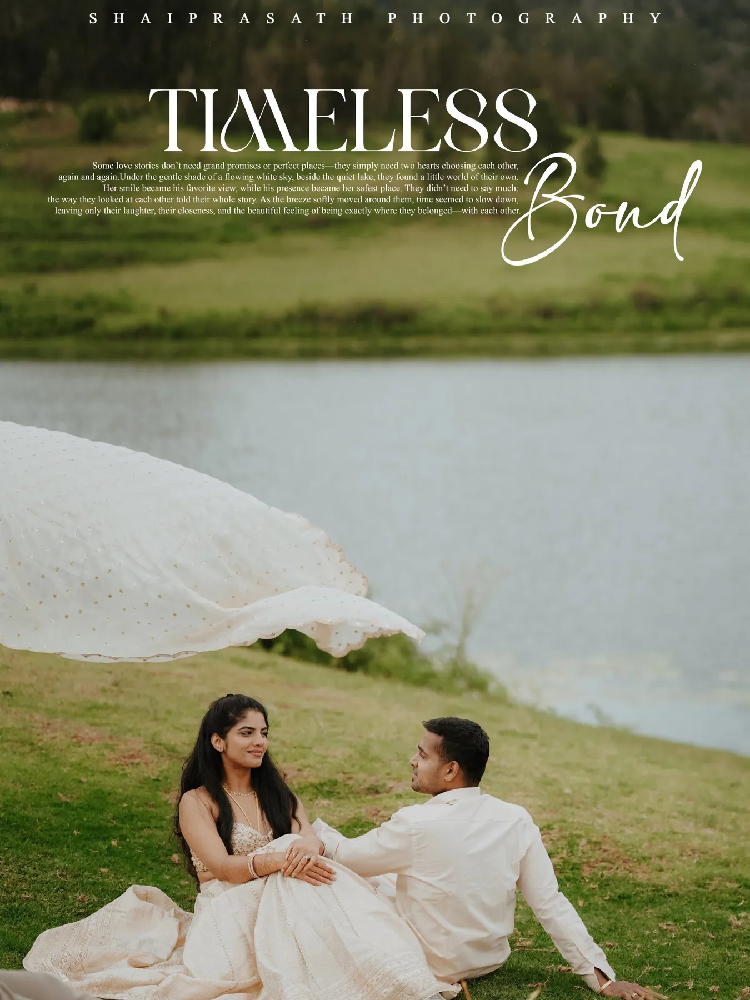
Post-wedding · Kodaikanal
Princess of Hills
Mist on the lake, a horse that wouldn't leave the frame, and a veil caught by the wind.
The story
We drove up before sunrise and had the lake almost to ourselves. Cream outfits against the green, a long white veil and very little direction.
The horse was not part of the plan. It walked into the first frame, stayed for the next twenty, and ended up in the couple's favourite photograph.
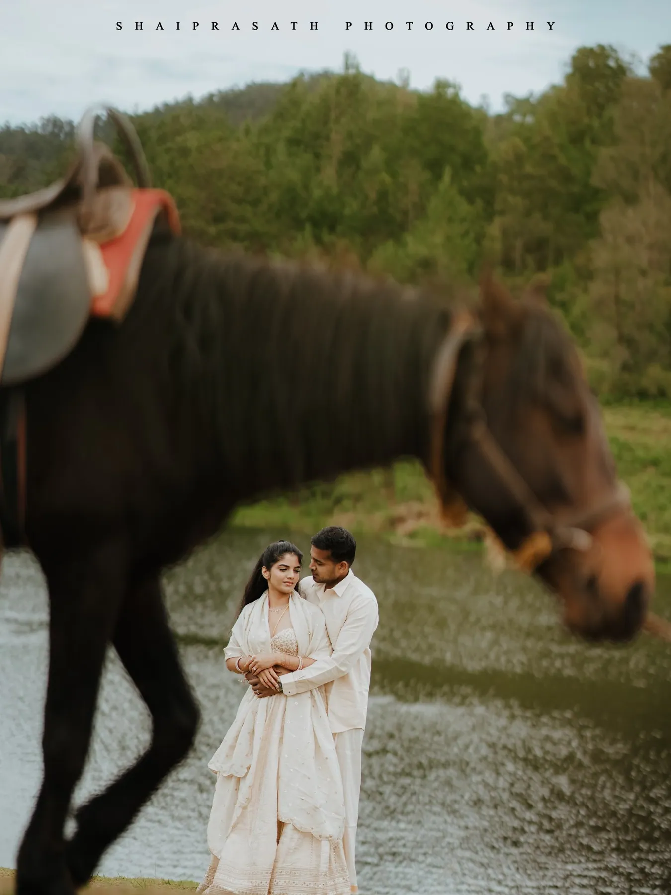
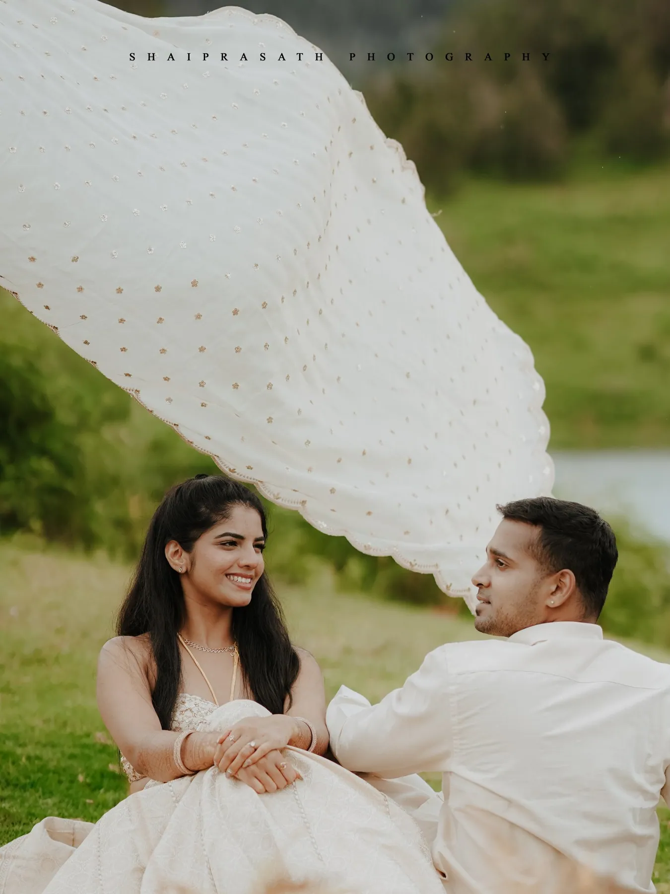
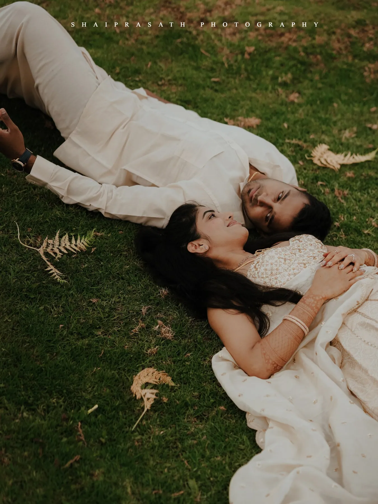
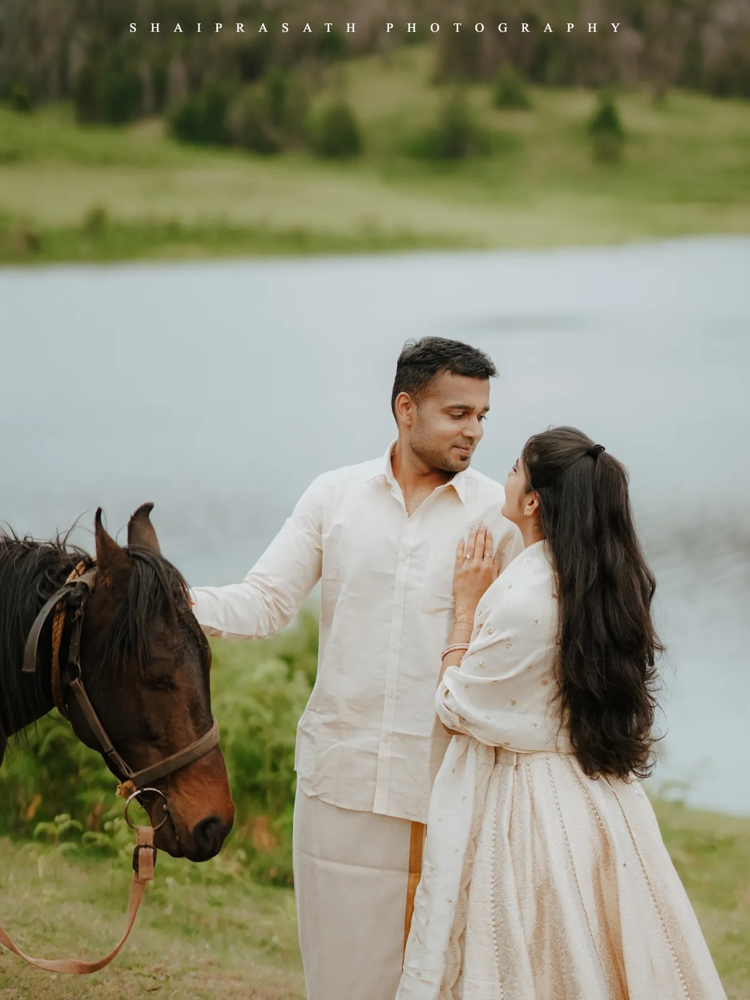
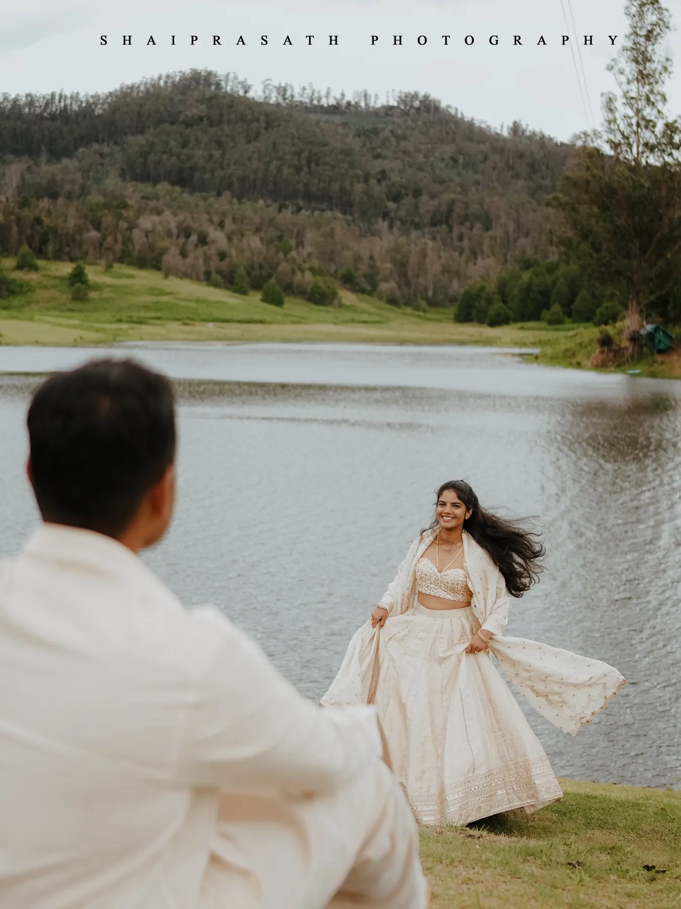
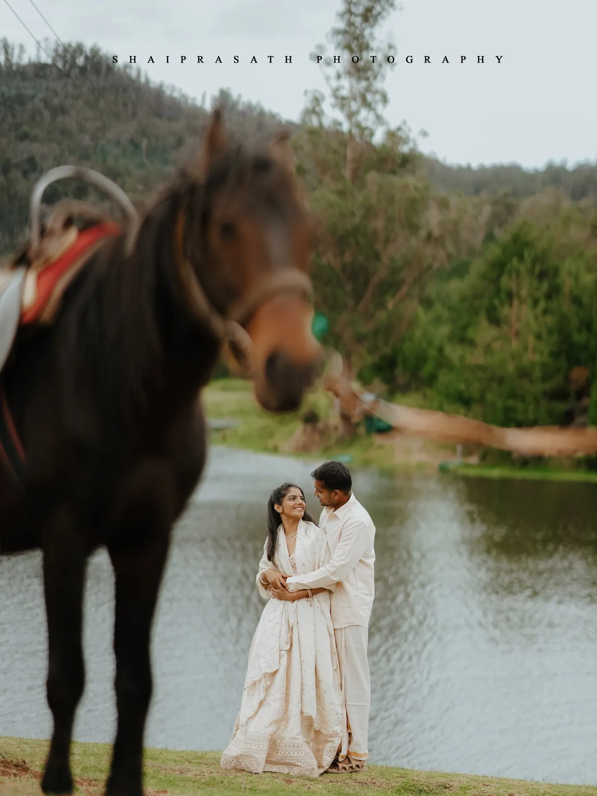
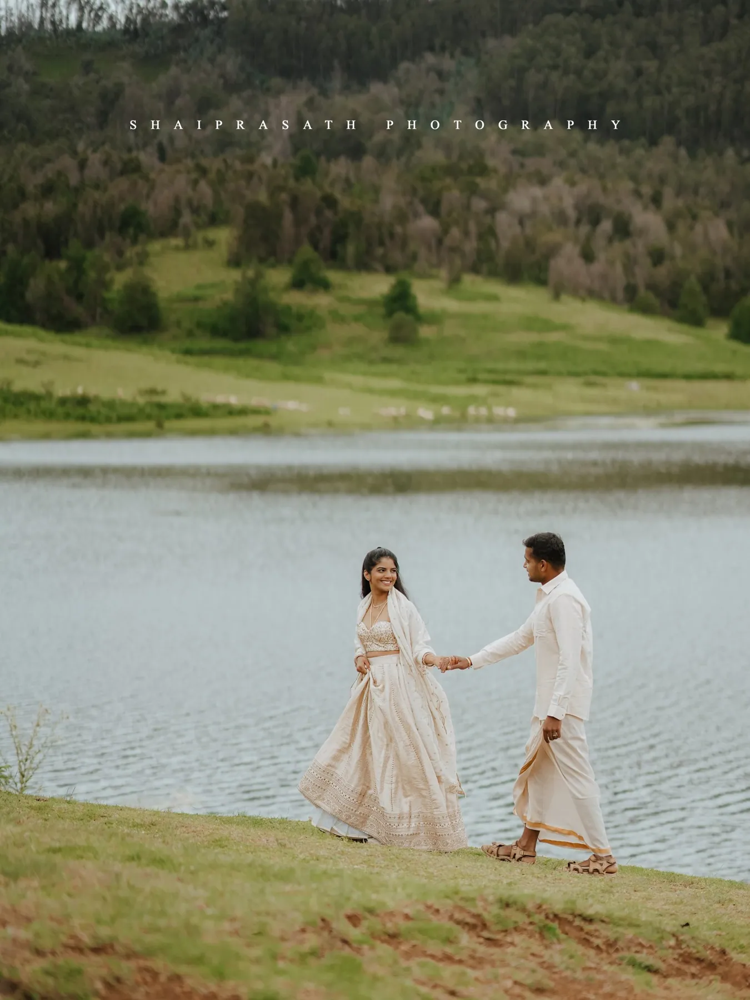
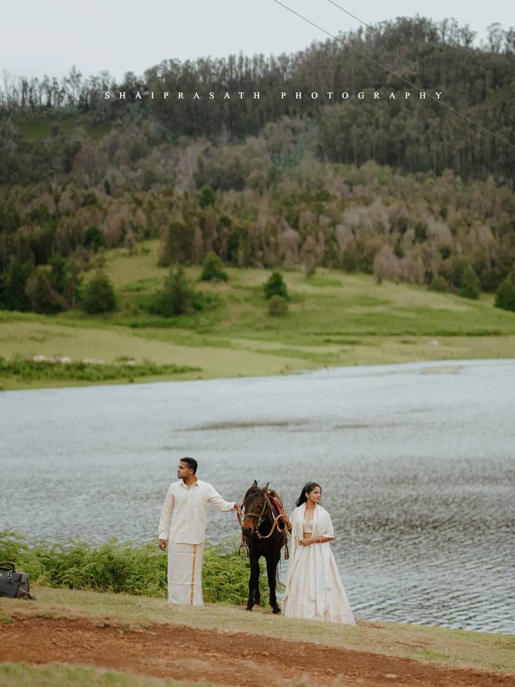
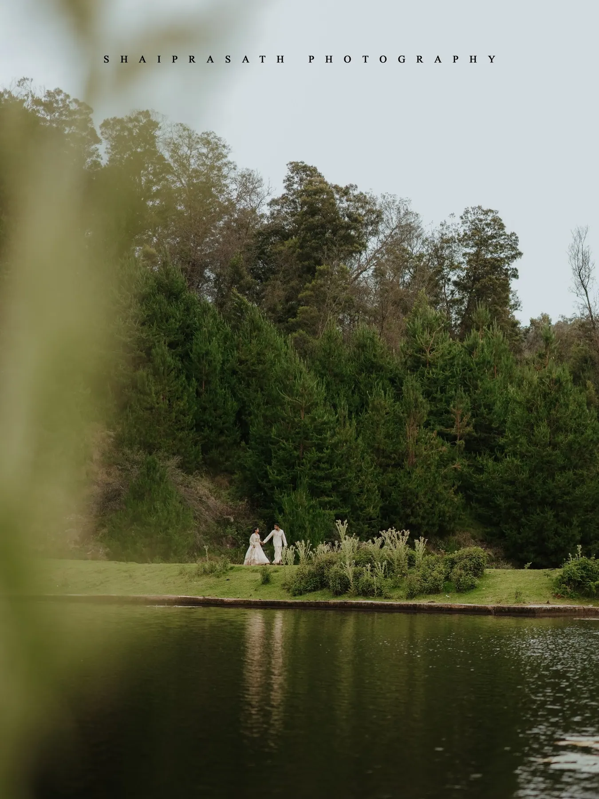
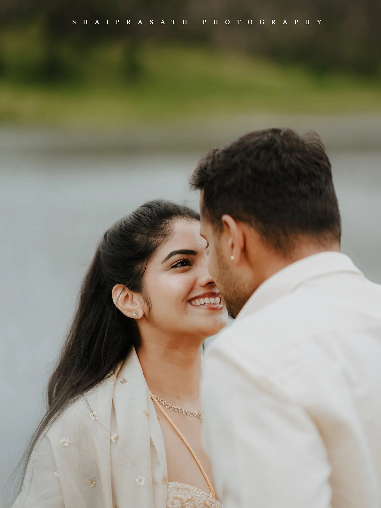
Bookings & enquiries
Tell us about your day.
Share your date, the venue and a little about your family. We reply personally — usually with a few questions of our own.
+91 95005 88836